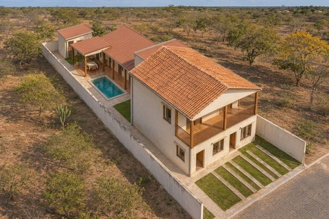
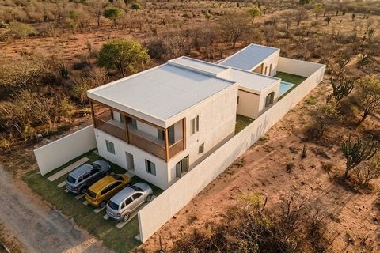
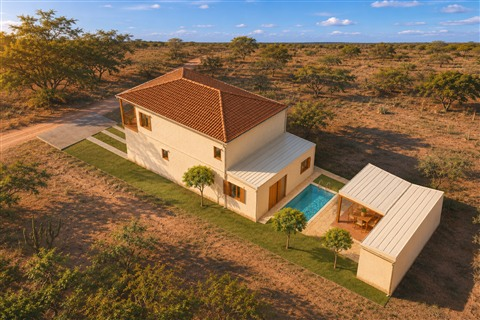
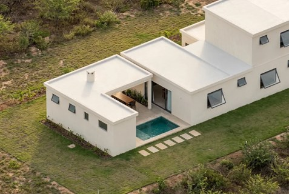
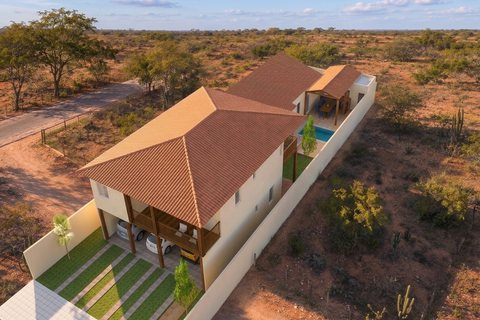
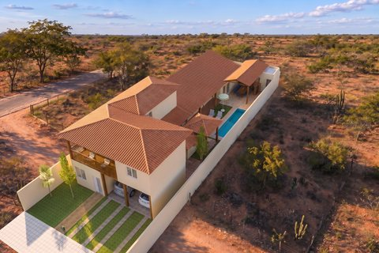
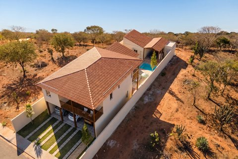

Escolha uma casa
Todas as casas

01 · Casa da GaleriaEdícula lateral · suítes voltadas ao jardim
02 · Casa do PátioPátio de luz · lazer ao fundo
03 · Casa do JardimFrente íntima · salão voltado ao quintal
04 · Casa do Átrio SocialCinco quartos · piscina pequena e quiosqueem preparação05 · Casa 5Em preparaçãoem preparação06 · Casa 6Em preparação
07 · Casa 7 · em UComo pedido · garagem 3 carros
08 · Casa 8 · em UCompacta · 283 m²
09 · Casa 9 · em USocial + hóspedes · piscina 3 × 7 mTrês alternativas · cinco quartos · estudo preliminar
Casa da Galeria
Opção 03 — revisão do núcleo íntimo.
O banheiro central sem janela foi eliminado. Os quartos 1 e 2 agora usam um banheiro reversível com janela exterior: acesso direto pelo quarto 1 e pelo hall para o quarto 2, sem atravessar outro dormitório. O espaço liberado virou closet do quarto 2. São três suítes privativas (uma térrea e duas superiores) e dois quartos atendidos pelo reversível — não cinco suítes exclusivas. As duas portas do banheiro precisam de ferragens de privacidade coordenadas, a detalhar no executivo.
O solo natural desta alternativa tem pouca margem sobre 30%. A faixa de 2,10 m entre piscina e quiosque combina jardim e percurso, não um grande deck inteiramente concretado. Zoneamento, anexo na divisa, estrutura e instalações continuam sujeitos à validação profissional e municipal.
Visualizações fotorrealistas
O projeto em imagens.
Imagens geradas por IA a partir do modelo do projeto. Acabamentos, paisagismo e entorno são ilustrativos; consulte as plantas para dimensões e detalhes.
Carregando mobiliário e veículos…
Maquete de estudo com modelos texturizados. Abra cada pavimento para inspecionar paredes, móveis e passagens; gire e aproxime com o mouse ou com os dedos.
Revisão de 31/10: apoio e lavabo nos fundos. A parede posterior é cega e a cobertura drena para dentro do lote. Construir na divisa é uma hipótese condicionada à zona, ao condomínio e ao licenciamento, não uma permissão já confirmada. A LC 34/2022 admite afastamento nulo em algumas zonas, mas não em todas; seu art. 151 também restringe usos geradores de incômodo junto às divisas. Fonte: Diário Oficial, pp. 44–47.
Áreas construídas geométricas pela face externa; o superior desconta o vazio da escada (¹). Solo natural (²) exclui toda projeção de cobertura, inclusive beirais, piscina com borda e pavimentação. Nas vagas, só a grama efetiva entre as faixas de concreto foi contada. Enquadramento urbanístico e aceitação desses jardins precisam de confirmação municipal. A Casa do Pátio tem margem de apenas 0,84 m² acima dos 126 m² de referência: qualquer pavimentação adicional exige recálculo.
A organização vem primeiro
Cada quarto com seu banheiro.
Os três quartos térreos são suítes com vestíbulo privativo. No superior, a master tem closet e banheiro; a quinta suíte também tem banheiro próprio. Áreas dos ambientes fechados descontam 15 cm das dimensões entre eixos. Toque na planta para ampliar.
Acesso externo ao lazerPercurso da casa até a piscina
Superior
Revisão do novo estudo
Escada, cobertura e circulação.
- Escada em U18 espelhos de 17,5 cm; piso de 28 cm; lances de 1,10 m; patamar de 1,10 m. A laje tem um vão integral sobre os lances. O corte acima é desenvolvido, não uma seção reta da casa.
- Desembarque no hallA chegada superior abre para circulação comum. Quarto, escritório e suíte menor têm entradas independentes. A estrutura deve preservar o vão e a altura livre previstos.
- Piscina pequena e lazer conectadoÁgua de 2,50 × 5,00 m; quiosque coberto; lavabo acessível pela área externa. Os percursos estão desenhados sobre as plantas.
- Cobertura correspondente aos volumesA edícula usa duas águas no bloco principal e coberturas metálicas nos volumes secundários. A casa do pátio usa planos de uma água. O pátio fica descoberto; os encontros têm alturas diferentes. Inclinações, rufos, drenagem e estrutura ainda exigem detalhamento.
- Sombra e controle do calorVaranda frontal de 2,20 m entre eixos, proteção externa das janelas, cobertura isolada proposta e sombra vegetal nos jardins. Estratégias de concepção, sem simulação térmica ou solar concluída.
- 3 vagas descobertas2,50 × 5,00 m cada; duas faixas concretadas por vaga. Percurso frontal mais estreito: 0,90 m. Vagas e acesso devem ser conferidos com os veículos reais.
Dimensões e conforto
Comparação com a faixa confortável do briefing, não certificação normativa. O quadro identifica os ambientes compactos em vez de classificá-los automaticamente como confortáveis.
| Piso | Ambiente | Área livre | Referência do briefing | Leitura |
|---|
Parâmetros e limites de verificação
| Item | Critério adotado | Situação |
|---|---|---|
| Afastamentos | Estudo: 5 m frente; 1,50 m laterais; anexo cego no fundo com afastamento nulo | Anexo condicionado à aprovação. Confirmar a zona e o condomínio; se for ZT02, também será necessário rever os recuos da casa principal. |
| Solo natural | Ao menos 126 m² / 30% | Cálculo com grama real entre faixas de estacionamento de 40 cm; conferir enquadramento municipal. |
| Vagas | 3 × 2,50 × 5 m | Previstas. A aplicação atual dos parâmetros de vagas depende do enquadramento do lote. |
| Quartos e banheiros | 5 suítes e lavabo externo | Acessos privativos representados; bacias voltadas à área de uso, com folga frontal verificada no estudo. |
| Janelas | Todas com abertura para fora; limitador a 30° | Folhas externas representadas nas plantas e nos modelos. Área nominal não equivale à ventilação efetiva; revisar esquadrias no executivo. |
| Mesas e circulação | 8 lugares no quiosque; 10 no gourmet; 75 cm atrás das cadeiras | Verificação geométrica sem certificação de acessibilidade ou uso simultâneo com cadeiras puxadas. |
| Varanda e escada | Pilares nos dois lados da varanda; escada 2e + p = 63 cm; vão integral | Elementos previstos, não dimensionamento estrutural. Conferir fundações, vigas, corrimãos, guarda-corpos e altura livre no executivo. |
| Plano Diretor | LC 34/2022, arts. 141, 146–152 e anexos aplicáveis | Republicação oficial lida. Zona cadastral, alterações posteriores e restrições ambientais não confirmadas para este lote. |
Modelo editável · Sweet Home 3DMemorial e continuidadeRevisão geométricaRevisão de móveis e aberturas
Estudo preliminar refeito a partir do programa. Não é projeto executivo, aprovado ou garantia de ausência de falhas. Estrutura, instalações, acessibilidade integral, detalhamento da piscina e licenciamento são etapas seguintes. Os arquivos do Sweet Home contêm coberturas, janelas voltadas para fora e passagens abertas; o visualizador web utiliza um acervo de mobiliário diferente. A piscina é representada pela superfície e pela borda, com proposta de acesso por escada inox; a profundidade de 1,40 m ainda exige projeto específico.
Referências consultadas antes do desenho
Arquitetura para o clima e para o uso.
- ProjetEEE / Ministério de Minas e Energia — inércia térmica e resfriamento. Orientou a combinação de sombra, proteção da cobertura e ventilação controlável; não se presume que massa térmica sozinha resolva o calor.
- LabEEE / UFSC — arquitetura e clima. Referência para ventilação seletiva, proteção solar e superfícies claras. A classificação histórica do material não comprova a zona normativa atual do lote.
- Casa Planos, Rede Arquitetos, Sobral — descrição dos arquitetos. Referência de pátios, privacidade e venezianas no semiárido; seus parâmetros de implantação não foram transplantados.
- Casas MBV2, Rede Arquitetos — publicação e entrevista dos autores. Referência para quartos associados a vazios externos e aberturas recuadas.
- Diário Oficial de Petrolina — republicação da LC 034/2022, 31/05/2022. Consultar anexos dos núcleos urbanos e da ocupação conforme localização cadastral. Não foi obtida confirmação oficial da zona deste lote.
Aplicar essas referências às duas casas é uma decisão de projeto, não um resultado de ensaio ou simulação. Pesquisa em 30/10/2026.
Móveis: Poly Haven · CC0. Carros: Scopia / Sweet Home 3D, CC BY 3.0, redimensionados. Créditos completos preservados com o acervo anterior.